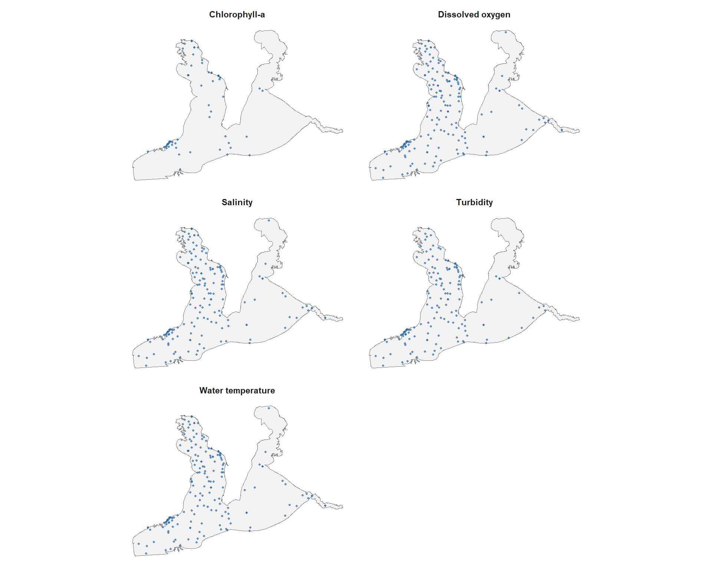
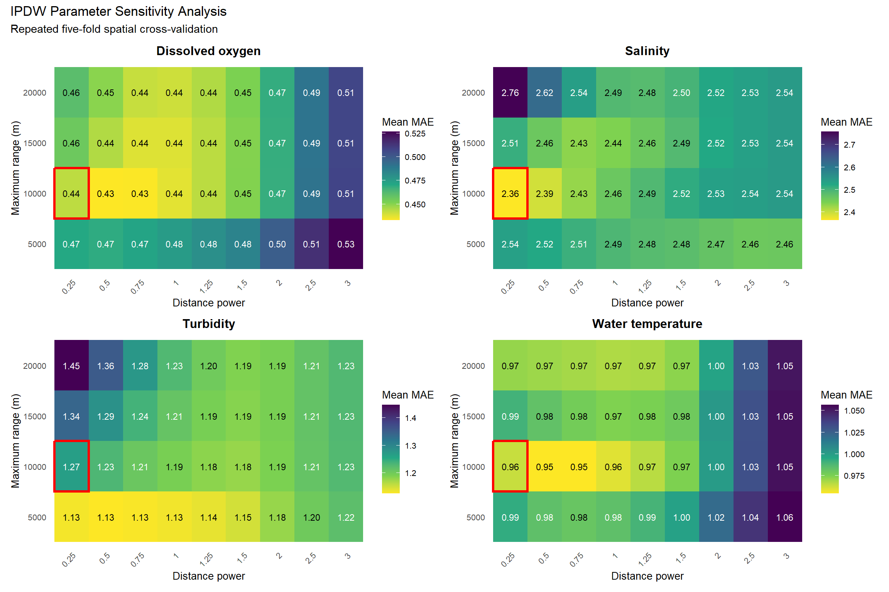
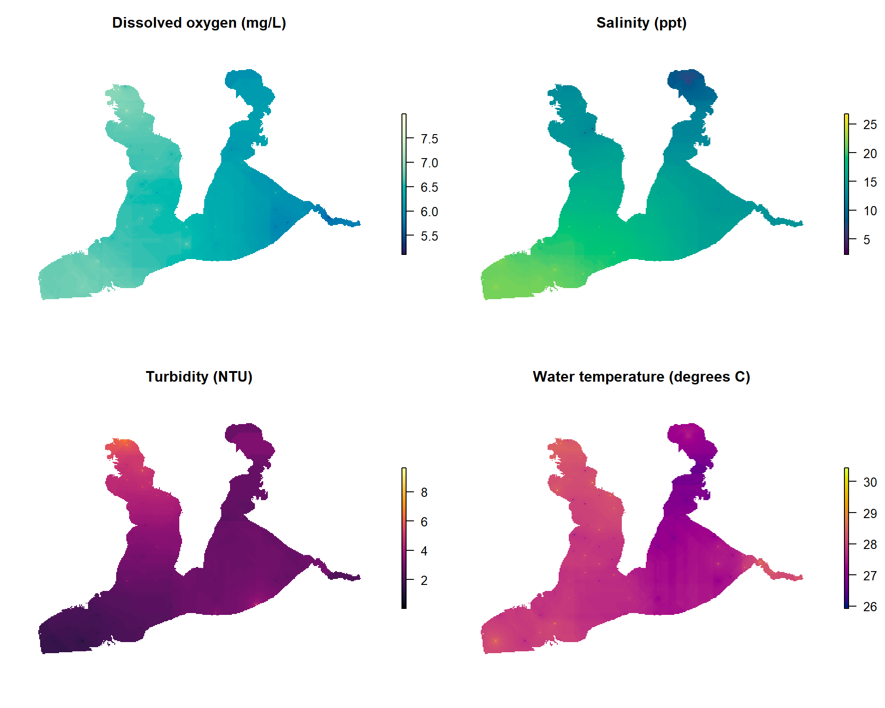
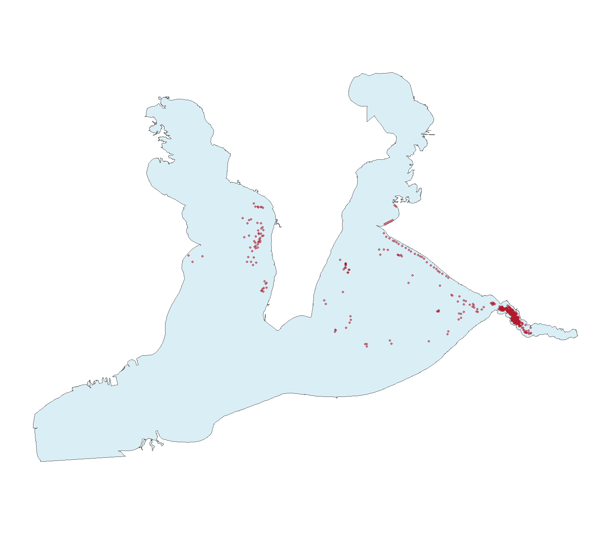

| Parameter | Total observations | Numeric results | Unique stations | Begin date | End date | Reported units |
|---|---|---|---|---|---|---|
| Water temperature | 7,161 | 7,161 | 169 | 01/04/2005 | 12/18/2024 | deg C |
| Salinity | 6,994 | 6,994 | 159 | 01/04/2005 | 12/18/2024 | ppt, ppth, PSS |
| Dissolved oxygen | 6,261 | 6,261 | 169 | 01/04/2005 | 12/18/2024 | mg/L |
| Turbidity | 3,402 | 3,399 | 146 | 01/04/2005 | 12/18/2024 | NTU |
| Chlorophyll-a | 1,847 | 1,504 | 54 | 01/11/2005 | 11/18/2024 | ug/L |
Results
Water-Quality Data Coverage
| Parameter | Spatial bins | Unique stations | Included observations | First year | Last year | Units |
|---|---|---|---|---|---|---|
| Chlorophyll-a | 27 | 48 | 754 | 2005 | 2024 | ug/L |
| Dissolved oxygen | 68 | 145 | 3,072 | 2005 | 2024 | mg/L |
| Salinity | 67 | 135 | 3,400 | 2005 | 2024 | ppt |
| Turbidity | 61 | 122 | 1,563 | 2005 | 2024 | NTU |
| Water temperature | 68 | 145 | 3,441 | 2005 | 2024 | degrees C |

IPDW Parameter Sensitivity

IPDW Spatial Cross-Validation Performance
| Parameter | Units | Distance power | Maximum range (km) | Mean MAE (SD) | Mean RMSE (SD) | Mean bias | Mean coverage |
|---|---|---|---|---|---|---|---|
| Dissolved oxygen | mg/L | 0.25 | 10 | 0.443 (0.010) | 0.565 (0.010) | 0.009 | 100.0% |
| Salinity | ppt | 0.25 | 10 | 2.364 (0.039) | 3.192 (0.030) | 0.197 | 100.0% |
| Turbidity | NTU | 0.25 | 10 | 1.269 (0.027) | 1.684 (0.028) | -0.151 | 100.0% |
| Water temperature | degrees C | 0.25 | 10 | 0.964 (0.019) | 1.162 (0.051) | -0.067 | 100.0% |
Environmental Predictor Surfaces
| Parameter | Units | Minimum | Maximum | Predicted cells | Cell size |
|---|---|---|---|---|---|
| Dissolved oxygen | mg/L | 5.11 | 7.99 | 33,792 | 100 x 100 m |
| Salinity | ppt | 2.31 | 26.73 | 33,792 | 100 x 100 m |
| Turbidity | NTU | 0.03 | 9.62 | 33,790 | 100 x 100 m |
| Water temperature | degrees C | 25.93 | 30.43 | 33,792 | 100 x 100 m |

Oyster Occurrence Data
